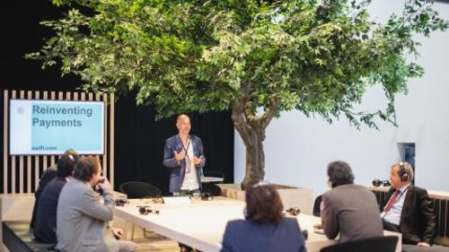
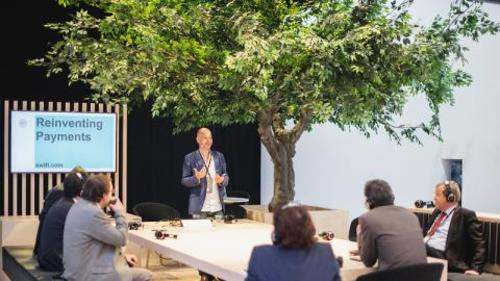
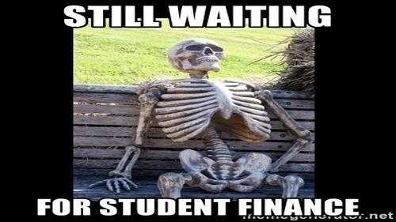
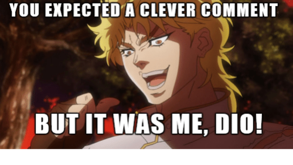
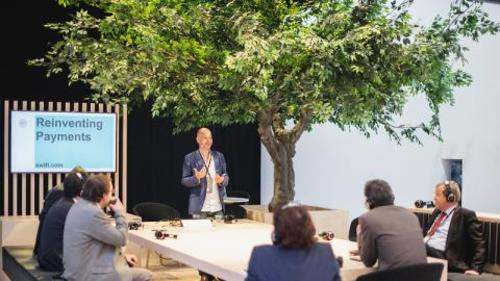
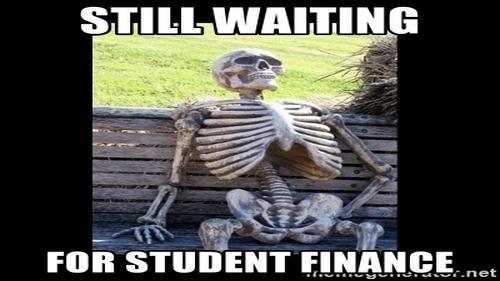
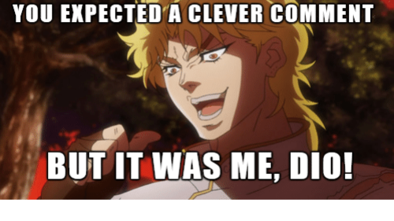

Jose Gomez
Hello, my name is Jose Gomez and I am an aspiring student who is trying to pursue his dream of graduating with a BA in Finance. I am still going to school but just because this is true, that doesn't mean I am not ready to take my knowledge and apply it to the real world. My long journey through College like everyone else First started as being a freshman who isn’t really accustomed to the huge change from high school. First starting college, I was a very shy kid who would never talk to anyone unless I really had to. I really had no self-confidence and couldn’t just start a conversation with someone as other people could. Me being quiet I think comes from being raised in a single apartment with 5 people stuck in a little space. Being told to stay quiet constantly as a kid could have made me accustomed to always being quiet and it didn't help me with getting out of my comfort zone and socializing. Also not having someone I can talk to as a child could have also prevented me from being a more outgoing person, having a brother that wouldn’t really treat me or talk to like a brother really hurt me because I always wanted to have conversations with him but I could never have something like that. Having my older sister leave the house also might have affected me from having a role model I can look up to and be like. Even with all of this happening in my life I knew that I had to be in school and try my best to do well and help my family in the future. I treated school like something I had to do and not something that I wanted to do so I did all my work and I tried to do it early in order to have more time for myself and play video games. It felt like because I had no real social life other than the small circle of friends I had, I focused too much on school because that was the only thing I could really focus on.
Even though I might not have a lot of experience, I am ready to learn and tackle and problem head on. Throughout my life I've been known as the one who would never amount to anything in life but this negativity allowed me to push forward and prove all these people wrong. I want to be someone who can be proud of themselves and actually be someone in life. In the course of 1 year I have learned a lot about myself and the way I learn the best. I have learned that the best way I learn is from watching someone do something then actually being able to do it myself and discover things on my own. This is where I gravitated towards math and science classes because I am able to watch the teacher do an experiment or problem and then be able to do it myself and discover something that will help me better understand what was actually happening. I have also found the best way to keep myself organized, with a list with everything I need to do and the date that shows when I am going to do it. This has not only helped stay on top of all my assignments but it has also shown me time gaps where I could have time for myself. Moving forward to college I will continue to organize myself this way and keep learning in this form in order to keep myself on top of everything. I will also try much harder because college will be so much more difficult and I need to be able to get through it to help my family financially.
I am determined and will never give up, even if I am not as experience then other. With me you will have someone who will be resilient no matter how difficult the situation is. Not having a calm and quiet place to study because of my family's financial needs really affected me because I would always get distracted and wasn’t able to really do homework on time and have enough time to sleep. It was always one or the other and I always chose to finish my homework because my parents thought it was more important for me to focus on school. Even with this expectation from my parents and the situation I was in, I was able to get through high school with really good grades. I know that it could have probably done better but with the situation of my parents, I did the best I could with what I was provided. With me being so focused on school I have learned many things such as the subjects I am best at and the ways I am able to learn the best. For instance, I feel like math and science are my best subjects but math being the clear winner in my opinion. With the knowledge of this strength I chose to major in finance and working with numbers as a career. I know that it is something that I can be good at as well as it being something that interests me, so I feel that it would be the best career for me. I feel that another strength I have is resilience and perseverance because I know there have been times where I felt like giving up on everything but in the end I was able to push through those hard times and do the best that I can at the time. Throughout school there have been many times where I have felt like giving up because I was burned out with all the honors and Ap classes I took throughout my time in college. Even with all these classes I would still go everyday afterschool to basketball practice which made it so much more stressful and added to the feeling of hopelessness but I knew I had to deal with it one way or another. I knew I still had to fight for my education, no matter what I felt like, I had to do this for the sake of my family. With this way of thinking, it allowed me to push through high school and finish, regarding all the honors, ap, and college classes I took. I know thinking like this will help me in the future because I know if I put my mind to something then I know I can do it.
Experience
Developer
• Developed websites for Apple
• Speaker at Breese
• Experience with Spreadsheet, Powerpoint, and Access
Breese TA
• Ran sessions to help students learn how to better their financial skills
• Reviewed and graded student projects
• Created educational content to help promote student education in the area of finance
• TA'd for over 100 students for each academic subject
Education
Uc Riverside
University of California Riverside
University of California Riverside
Portfolio
 



 